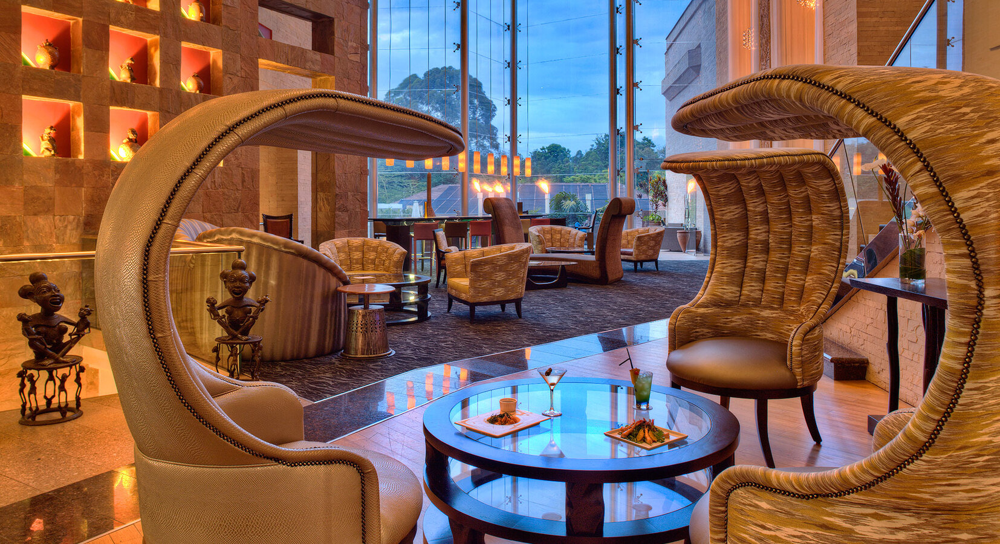
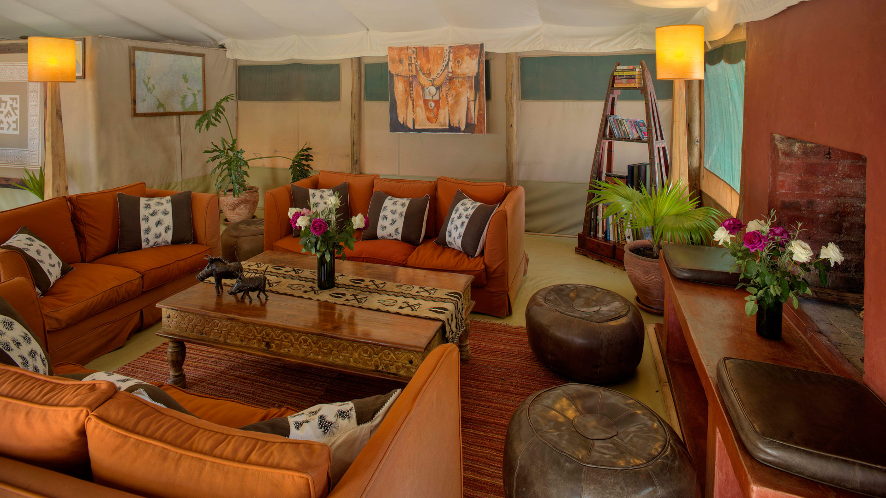
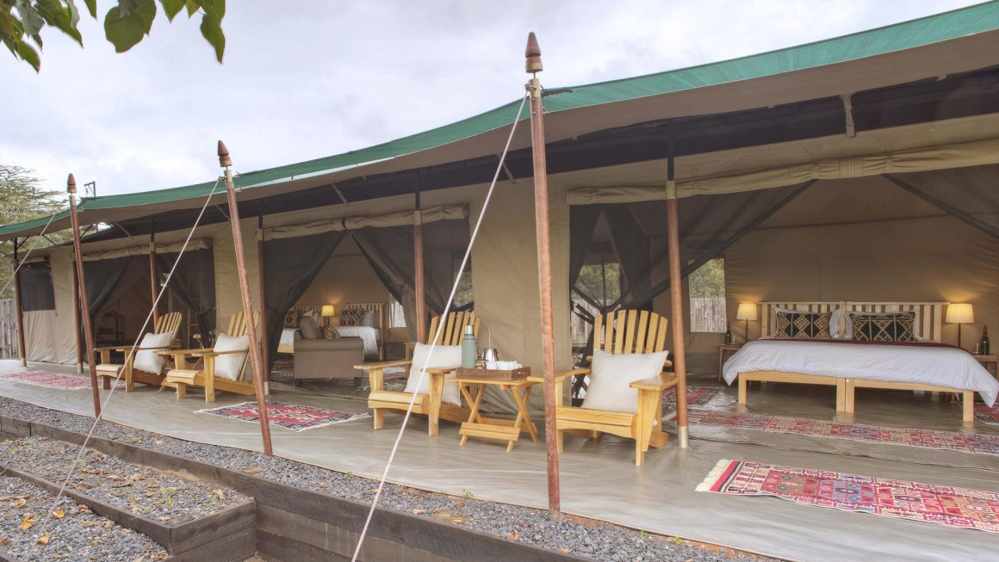
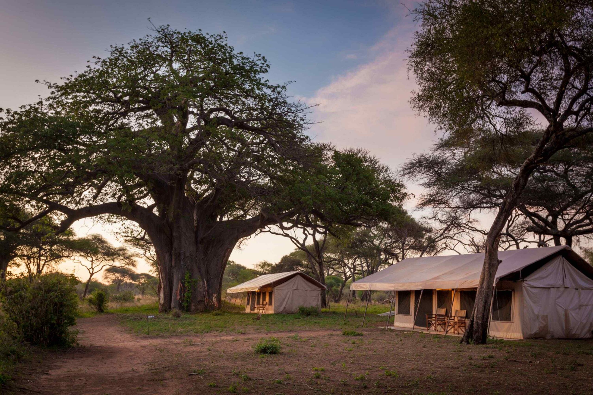
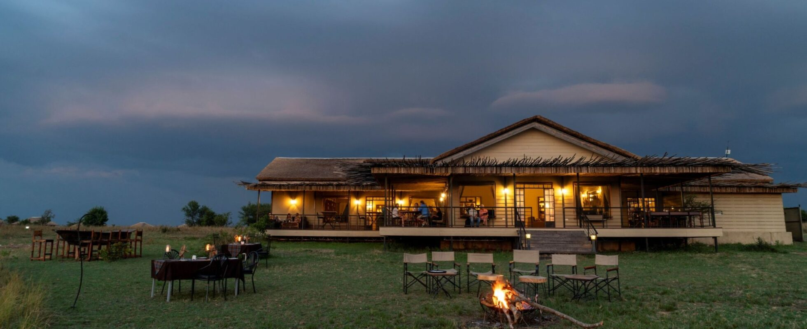
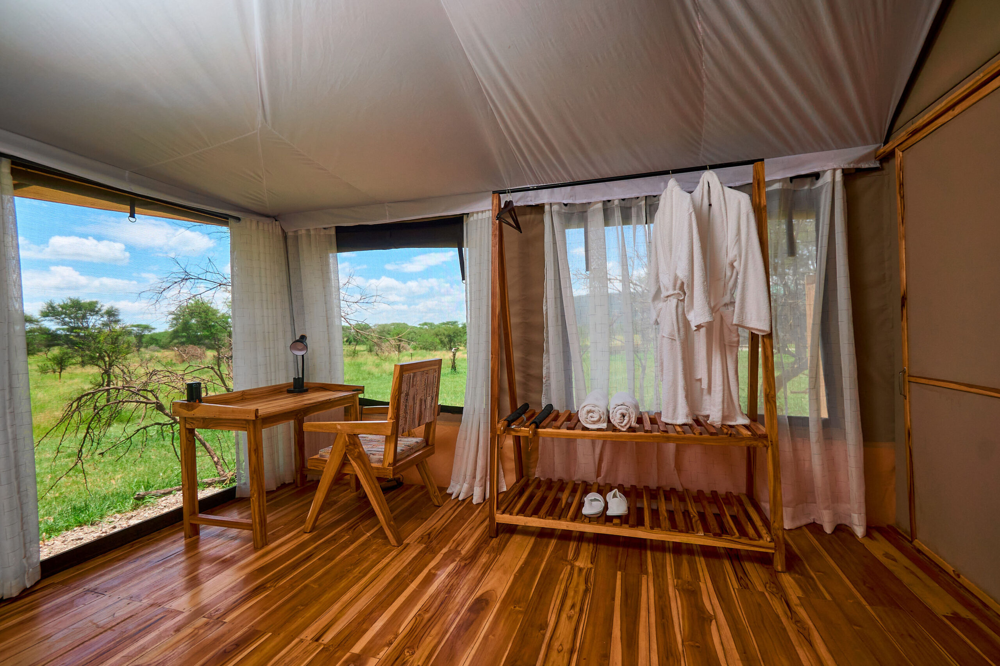
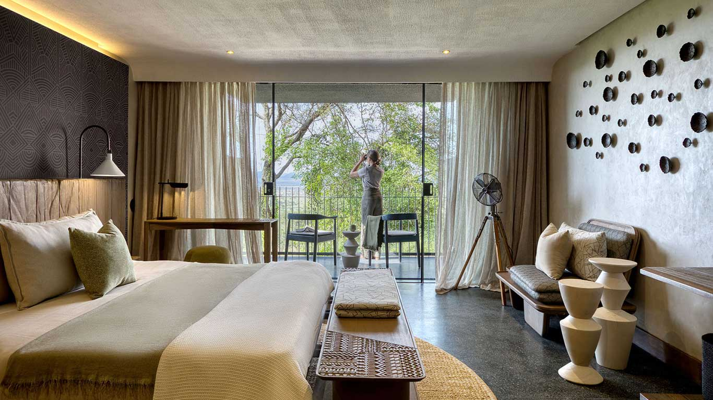
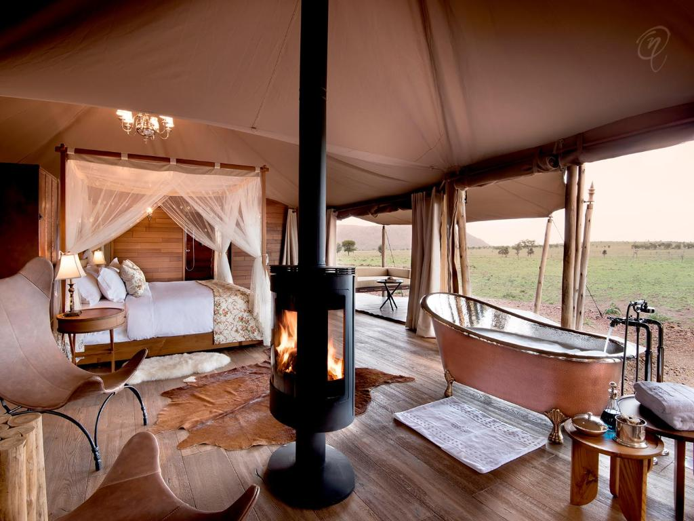

search
language
Experience the wild beauty of From the serengeti to Mahale Chimpanzees
Embark on an extraordinary 12-day cross-border safari that takes you through Kenya and Tanzania's most iconic wildlife destinations. This carefully curated journey combines prime wildlife viewing with cultural immersion in some of Africa's most breathtaking landscapes, from the rhino-rich conservancies of Ol Pejeta to the legendary Masai Mara and the spectacular Serengeti.
Experience the raw power of nature as you follow the path of millions of wildebeest and zebra during their annual migration. Witness the dramatic river crossings in Northern Serengeti, explore the Ngorongoro Crater's unique ecosystem, and discover the flamingo-filled shores of Lake Nakuru. Each day offers unparalleled game viewing opportunities and cultural encounters.
Our expert guides will share their deep knowledge of animal behavior and migration patterns, ensuring you're positioned for the most incredible wildlife spectacles. With comfortable accommodations and seamless logistics, you can focus entirely on the breathtaking safari experience across two of Africa's most famous safari destinations.
This journey is designed for wildlife enthusiasts and photographers seeking to witness nature's greatest events across international borders. Whether you're tracking the Great Migration or exploring diverse ecosystems, this itinerary offers an authentic African adventure filled with unforgettable moments.
Today's Highlight: Relaxed arrival and orientation; first taste of Kenyan hospitality.
Distance / Time: Airport transfer: 30–45 mins (depending on hotel location).
Arrive at Jomo Kenyatta International Airport, where a friendly representative will be waiting to welcome you to Kenya. From the moment you step off the plane, the anticipation of adventure begins. You will be transferred to your Nairobi hotel, enjoying a smooth ride through the city's bustling streets and scenic surroundings. After check-in, take some time to rest, refresh, and acclimate, preparing for the exciting journey ahead.
In the evening, enjoy a gentle introduction to Kenya perhaps a relaxed dinner at the hotel or a nearby restaurant, accompanied by a brief orientation with your guide. This is your first chance to soak in the sights, sounds, and energy of the country, and to reflect on the adventure that awaits. End the day with a peaceful night's rest, ready to begin your safari the following morning.



Today's Highlight: Rhinos, chimps & the thrill of nocturnal life.
Distance / Time: ~220 km | 4–5 hrs via Nanyuki
After a hearty breakfast, depart Nairobi and begin your journey toward Ol Pejeta Conservancy. The drive takes you through stunning landscapes with picturesque viewpoints providing perfect opportunities to pause for photos and take in the breathtaking scenery.
Upon arrival, settle into your lodge or camp before heading out on your first afternoon game drive. As the sun begins its descent, the wildlife becomes more active predators stir, herds of grazing animals move across the golden savannah, and the conservancy's iconic landscapes unfold in all their cinematic glory. Optional night drive available to experience the thrill of nocturnal wildlife.



Today's Highlight: Rhino encounters and lakeside drama.
Distance / Time: 180 km | 4–5 hrs
Drive southwest into the Great Rift Valley, a monumental scar of beauty carved by the restless hands of time. As the road descends, the world seems to open cliffs ripple into the horizon, and the air grows thick with the scent of earth and acacia. Below, Lake Nakuru glimmers like molten glass, its surface catching every flicker of light until it feels as though the sky itself has spilled upon the land.
Within this shimmering sanctuary, life moves in quiet synchrony. Endangered white and black rhinos graze calmly across open plains, their massive forms silhouetted against the golden grass. Along the shoreline, legions of flamingos gather in clouds of pink and coral, turning the water into a living painting. Rothschild giraffes glide through the fever-tree forests, elegant and unhurried, while lions stretch lazily beneath their shade, their amber eyes half-hidden, always watching.


Today's Highlight: Scenic lakeside safari & transition to the Mara.
Distance / Time: ~300 km | 6–7 hrs total
After a slow, sunlit breakfast, your journey unfolds toward Lake Naivasha a place where the air itself seems to shimmer with life. The road dips gently through fertile farmlands, where morning mist lingers like silk over rolling hills. As you approach the lake, the world softens; the sound of waves brushing reeds and the trill of distant kingfishers blend into a melody only nature could compose.
Step aboard a wooden boat and drift into the lake's heart, where time moves to the rhythm of ripples. Hippos surface with a sigh, eyes gleaming like polished stones, while African fish eagles circle high above, their haunting calls echoing across the mirrored water. On Crescent Island, the adventure becomes intimate with giraffes, zebras, and impalas roaming freely around you.
As afternoon light deepens into gold, continue your westward journey toward the Masai Mara, Kenya's untamed masterpiece. The land stretches endlessly ahead open plains brushed by the wind, acacia trees standing solitary like watchmen of the savannah. By the time you arrive, the sky burns crimson, and the Mara greets you with the low hum of life settling into dusk.


Today's Highlight: Big Cats, great herds & golden horizons.
Two full days in the Mara stretch before you like a promise vast, untamed, and alive with possibility. At first light, the horizon glows like molten gold, and the world stirs to life. Mist drifts above the plains, catching in the mane of a grazing zebra, while far off, the deep call of a lion ripples through the dawn. This is the hour of predators when the air feels electric with anticipation, and every shadow holds the possibility of movement.
Your morning game drive unfolds through this living canvas. Elephants march in quiet procession, their silhouettes etched against the rising sun. A pride of lions greets the day with lazy yawns and amber eyes half-closed in the warmth. Perhaps, if fortune smiles, a cheetah will rise from the tall golden grass a flicker of grace and speed that vanishes almost as soon as it appears.
As the day unfolds, carry your picnic into the heart of the savannah. Beneath the shade of an acacia, the land seems to hum wildebeests file across shallow rivers in endless rhythm, hippos snort and stir in hidden pools, and tawny eagles spiral high above, catching invisible currents. The Mara is more than a landscape; it's a living symphony, each creature adding its own note to the ancient score.
Highlight: The Great Migration corridor & crossing into Tanzania.
Road Option: ~250 km | 6–7 hrs via Isebania Border
Flight Option: 1–2 hrs (Mara → Serengeti Airstrip)
After breakfast, the adventure takes a graceful turn southward, tracing the red-dusted roads that wind toward the Isebania border, where Kenya and Tanzania meet in an invisible handshake of wilderness. The morning drive unfurls through changing rhythms rolling savannahs give way to scattered acacias, and the air grows heavier with the scent of rain and dust.
At the border, your guides coordinate the seamless transfer passports stamped, luggage exchanged, and soon you find yourself gliding deeper into Tanzania's embrace. The Serengeti begins not with a gate or a sign, but with a feeling a vastness that swallows the horizon and a silence so profound it seems to hum.
By afternoon, you arrive in the Northern Serengeti, a realm where the Great Migration breathes life into the land. Herds of wildebeest and zebra move like living rivers across the plains, dust clouds rising behind them as if the earth itself is alive. Predators stalk the edges of this grand procession lions crouched low in golden grass, and crocodiles waiting in the shallows of the Mara River, patient and ancient.



Today's Highlight: The Great Migration & river crossings (seasonal).
For two golden days, surrender to the rhythm of the Northern Serengeti, where every sunrise feels like the first light the earth ever knew. Here, the horizon is not a boundary but a promise an unbroken stretch of wilderness where life moves in endless motion.
As dawn spills across the plains, the landscape awakens in a shimmer of movement and sound. Columns of wildebeest snake toward infinity, their hooves drumming against the dry earth like the beating of a distant heart. Zebras, striped like smoke and shadow, weave gracefully among them, their braying calls rising and falling like music carried by the wind. Around the granite kopjes, silent watchers lie in wait lions crouched low, cheetahs poised, and leopards melting into stone and sun.
Evenings at camp unfold in soft ritual: lanterns flicker, the scent of wild sage drifts through the air, and the night hums with ancient lullabies hyenas whooping in the distance, lions calling across unseen valleys, and the whisper of wind through tall grass. Beneath an ocean of stars, stories are shared by the fire, and you realize that here, under this vast sky, you are both guest and witness to the oldest rhythm on earth.
Today's Highlight: Endless plains and big cat country.
Distance / Time: 150 km | 4–5 hrs (depending on route and sightings)
As morning mist lifts off the northern plains, your journey turns southward through undulating seas of grass that seem to ripple endlessly beneath the wind. Herds of gazelles scatter like whispers across the horizon, and vultures spiral high above, tracing invisible thermals in the open sky. The world feels ancient here raw, pure, and humming with the same life force that has moved through this land for millennia.
By midday, you arrive in the Central Serengeti, where the landscape deepens into the famed Seronera Valley a theatre of perpetual motion, and the very heart of the ecosystem's drama. Here, wildlife density defies imagination: leopards lounge draped across acacia limbs like living ornaments of gold and shadow, lions sprawl on sun-warmed kopjes in regal ease, and cheetahs stand tall on termite mounds, scanning the wind for the faintest tremor of prey.
An afternoon game drive reveals this realm at its most cinematic. The light burns low and molten, gilding the plains until every blade of grass seems to shimmer. Elephants wade through the honeyed glow, their silhouettes cut clean against a tangerine sky, while herds of buffalo move like slow tides through the dust. Every corner of Seronera holds a story of predator and prey, of ancient cycles renewed with every heartbeat of the land.



Today's Highlight: Transition from plains to highlands.
Distance / Time: 160 km | 4–5 hrs from central Serengeti
The morning awakens with a gentle hush, and a half-day game drive through the Serengeti unfurls like a private film of nature's most intimate moments. Golden mist curls languidly through acacia trees, softening the horizon and lending a dreamlike quality to the waking plains. Elephants move with deliberate grace through grass heavy with dew, while zebras lift their heads, ears twitching at the whisper of wind.
After this intimate communion with the Serengeti's magic, the journey continues with a scenic climb toward Ngorongoro. The landscape transforms gradually: rolling plains give way to forested hills, mist clings to ridges like delicate veils, and streams sparkle in hidden valleys. Every bend reveals a new vista, each more enchanting than the last, until the crater rim looms ahead like a colossal Amphitheatre sculpted by the hand of the Earth itself.
Upon arrival, your lodge perches majestically above the crater, offering a panoramic embrace of life below. The Ngorongoro Crater spreads out like a living canvas: elephants wander the grassy floor, flamingos tint shallow lakes with blush pink, and lions lounge under acacias, seemingly unconcerned with your watchful gaze.


Today's Highlight: The Crater of Eden & farewell to the wild.
Distance / Time: 90 km | 4–5 hrs
Wake before dawn to descend into the Ngorongoro Crater, often hailed as the "eighth wonder of the world." As your vehicle winds gently down the rim, the world below awakens in a soft, silken hush. Mist coils and drifts across the crater floor like a secret being slowly unveiled. Beneath this ephemeral veil, life moves in quiet perfection: rhinos graze with monumental calm, lions pad silently through the grass and flamingos trace delicate pink brushstrokes along the lakeshore, turning water into living art.
By afternoon, begin the scenic drive to Arusha, tracing back through highland forests and rolling valleys. Along the way, the wild gives way gradually to cultivated lands and bustling towns, yet the memory of endless plains, soaring mountains, and vibrant wildlife clings to the spirit. Upon arrival, your safari draws to a close. As you board your flight home, the landscapes of Kenya and Tanzania linger in your mind a mosaic of sun, dust, water, and soul, a journey that has awakened senses and left footprints on both earth and heart.
End of Itinerary
Compare prices across different group sizes for this comprehensive Kenya & Tanzania adventure
| Number of People | Mid-Range | Luxury | High End |
|---|---|---|---|
| 1 Person | $12,398 | $14,623 | $24,155 |
| 2 People | $7,980 | $10,343 | $15,045 |
| 3 People | $7,675 | $10,141 | $15,807 |
| 4-8 People | $6,863 | $9,330 | $13,928 |
| 6-12 People | $6,465 | $9,360 | $13,530 |
Experience the wild like never before with our expertly crafted safaris